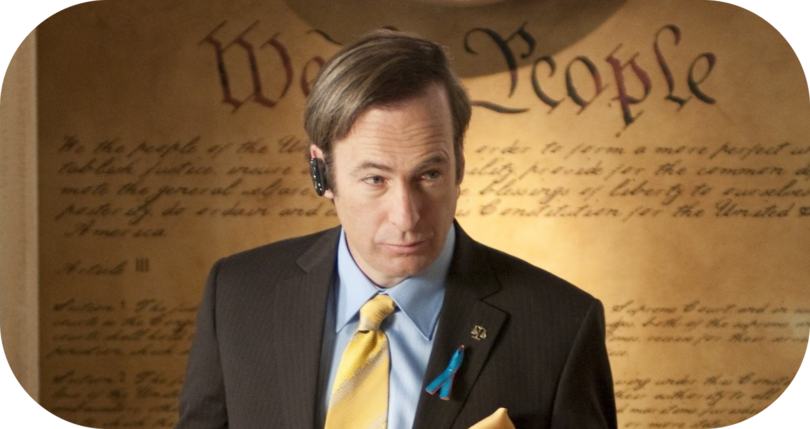

Saul Goodman
Saul Goodman, interpretado por Bob Odenkirk, é o advogado astuto e charmoso que se tornou um dos personagens mais icônicos de Breaking Bad. Seu verdadeiro nome é Jimmy McGill, e ele adota o pseudônimo "Saul Goodman" como parte de sua persona profissional, inspirada pela frase "It's all good, man!" (Está tudo bem, cara!), que reflete seu estilo descontraído e oportunista.
Saul é introduzido na série como o advogado de Walter White e Jesse Pinkman, conhecido por sua ética flexível e disposição em ajudar criminosos a "navegar" no sistema jurídico. Ele é um mestre em esquemas criativos e soluções improvisadas, sempre disposto a operar fora da lei para proteger seus clientes e seus próprios interesses. Apesar de seu comportamento cômico e frases de efeito memoráveis, Saul é extremamente perspicaz e sabe como manipular pessoas e situações a seu favor.
Além de ser um facilitador no crescimento do império de drogas de Walter, Saul desempenha um papel essencial em conectar os protagonistas a figuras-chave no mundo do crime, como Mike Ehrmantraut e Gustavo Fring. Sua habilidade de sobreviver e prosperar no perigoso submundo de Albuquerque o torna uma figura indispensável para Walter e Jesse, embora ele frequentemente subestime a gravidade das situações em que se envolve.
A história de Saul Goodman é explorada profundamente em Better Call Saul, um prelúdio que revela sua origem como Jimmy McGill, um advogado inicialmente idealista que se torna cada vez mais desiludido e corrupto. A série detalha seu relacionamento com seu irmão Chuck McGill, sua parceira e amor Kim Wexler, e como suas escolhas o levam a se transformar no Saul Goodman conhecido em Breaking Bad.
Com uma mistura de carisma, humor e tragédia, Saul é um personagem complexo que encapsula a luta entre ambição, moralidade e sobrevivência. Bob Odenkirk recebeu aclamação crítica por sua interpretação, transformando Saul Goodman de um alívio cômico em Breaking Bad a um dos personagens mais humanos e profundos do universo criado por Vince Gilligan.